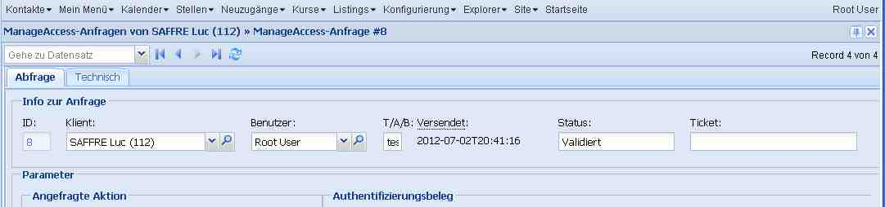
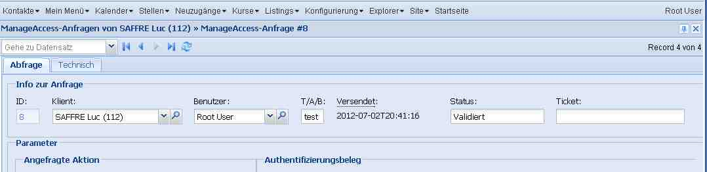

20120702¶
Endspurt vor dem Release¶
Behoben: vorzeitige Vertragsbeendigung muss man auch in einem ausgedruckten Vertrag noch ändern können.
Behoben: Wenn man versuchte eine Notiz per E-Mail zu verschicken, und wenn die Notiz für einen Klienten war, der keine E-Mail-Adresse hatte, dann kam auf dem Server ein Traceback:
Traceback (most recent call last): File "/usr/local/django/test_dsbe/using/lino/lino/ui/extjs3/ext_ui.py", line 1760, in api_element_view rv = a.run(elem,ar) File "/usr/local/django/test_dsbe/using/lino/lino/modlib/outbox/models.py", line 163, in run r.full_clean() File "/usr/local/django/test_dsbe/using/lino/lino/modlib/outbox/models.py", line 262, in full_clean super(Recipient,self).full_clean() File "/var/snapshots/django/django/db/models/base.py", line 832, in full_clean raise ValidationError(errors) ValidationError: {'address': [u'Dieses Feld darf nicht leer sein.']}ManageAccess-Anfragen: [Neu] -> NRNr ist unformatiert. Das war Fehlanzeige. Lag daran, dass die Nummer schon in den Stammdaten unformatiert stand. Die NR-Nummern aus TIM werden momentan ja weder formatiert noch validiert.
(ungemeldeter Bug behoben:) Wenn man das Schnellsuche-Feld in der Listenansicht benutzt hatte, um auf eine Person zu springen, dann in deren Detail den KBSS-Reiter öffnete, so wurden dort keine KBSS-Anfragen angezeigt, auch wenn es deren gab. Weil der Suchstring fälschlicherweise an die child requests weitergeleitet wurde.
Wenn man einen bestehenden MAR (im Detail) dupliziert, dann kam “Keine weiteren Records vorhanden. Detail-Fenster wird geschlossen”.
Lag daran, dass duplicate() mit set_status=dict(record_id=)) antwortete, und dadurch wurden mt und mk aus dem Status gelöscht. Die action response set_status habe ich also wieder ausrangiert, stattdessen gibt es eine neue Antwort goto_record_id.
Bestehenden MAR duplizieren: dann kommt: Keine weiteren Records vorhanden. Detail-Fenster wird geschlossen
Field Level Permission Control¶
Gedanken über get_row_permission und disabled_fields.
Für
CachedPrintable
hatte ich mir ja folgendes ausgedacht:
def get_row_permission(self,user,state,action):
"""
Cached printables may not be edited after they have been printed.
"""
if self.build_time and not action.readonly:
return False
return super(CachedPrintable,self).get_row_permission(user,state,action)
Aber das war ein bisschen zu viel des Guten, denn z.B. eine vorzeitige Vertragsbeendigung muss man auch in einem ausgedruckten Vertrag noch ändern können.
Weil get_row_permission nur pauschal für den ganzen Record denkt,
müssen wir das wie bisher über disabled_fields regeln.
Man kann nicht generell sagen, dass alle
CachedPrintable
readonly werden, bloß weil sie ausgedruckt worden sind.
disabled_fields gibt ja eine Liste von Feldnamen zurück, die auf dem betreffenden Record schreibgeschützt sein sollen. Das ist natürlich sinnlos, wenn durch get_row_permission schon der gesamte Record schreibgeschützt ist. Insofern ist dieses System mit einer separaten Method disabled_fields ein bisschen unlogisch. Logischer (leichter zu dokumentieren) wäre es, wenn wir get_row_permission ersetzten durch eine Methode get_field_permission(self,user,state,action,field). Aber in der Praxis wäre das (1) fies zu warten, und (2) technisch uneffizienter.
Also disabled_fields ist sozusagen eine pragmatische Lösung für field level permission control.
Standard-Anzeigebreite von Feldern¶
Es gab noch ein subtiles Layout-Problem, das jetzt eine politisch vorbildliche Lösung gefunden hat.
Betrachten wir folgenden Ausschnitt aus dem Detail eines MAR. Das Feld “T/A/B” (environment) ist deklariert mit max_length=4. Aber in der hier gezeigten Fenstergröße und Auflösung (das Problem kam nur, “wenn es eng wird”) war es nicht breit genug, um diese vier Buchstaben anzuzeigen:
Ein erster Woraround war, dass ich im Layout die Breite manuell auf 5 setze:
class CBSSRequestDetail(dd.DetailLayout):
main = 'request technical'
request = """
info
parameters
result
"""
...
info = """
id person user environment:5 sent status ticket
"""
Ja, das geht...
... aber es ist nur eine Frickelslösung.
Lino müsste so was eigentlich automatisch korrekt handhaben. Das kommt, weil ich in einer hbox die Feldbreiten einfach in hflex-Werten formuliere. Das ist zu einfach gedacht. Lino ignoriert die Tatsache, dass “große” Felder mehr Spielraum zum Sparen haben. Wenn es eng wird, ist es ungerecht, dass die Kleinen erdrückt werden, während die Großen weiterhin mehr als gut über die Runden kommen.
In der Welt draußen ist das nicht so leicht zu implementieren, aber in Lino benutze ich jetzt boxMinWidth um das zu verhindern:
- CharField mit max_length bis 10 Zeichen (momentan ein hardkodierter Schwellenert) kriegen eine solche boxMinWidth.
- Lino.DateField und Lino.IncompleteDateField haben jetzt ebenfalls
(schon in der
linolib.js) eine hardcodierten boxMinWidth. Der Wert 11 von Lino.DateField ist experimentell. Eigentlich sollte es mit 10 auskommen, aber entweder ist meine Lino.chars2width nicht ganz richtig, oder ExtJS rechnet den Trigger-Button mit in die minBoxWidth hinein.
Checkin ebbec0736a5e und Upgrade testlino in Eupen.
Es gibt noch mindestens zwei offene Probleme:
Wenn man über “Meine Tx25-Anfragen” eine neue Anfrage erstellt, füllt Lino die NR-Nr. nicht ein, nachdem man den Klienten ausgewählt hat.
Das ist auch nicht so einfach hinzukriegen, weil ich nicht einfach z.B. das Feld person aktiv machen kann. Für gut müssten aktive Felder eines Insert-Fensters kein echtes save bewirken, sondern der Server muss create_instance aufrufen, dann form2obj_and_save ohne save aufrufen und dann mit diesem data_record antworten. Sehr subtil.
- Wenn man es über den Klienten macht ([Neu]-Button im Reiter KBSS), und wenn der Klient eine ungültige NR-Nr. in den Stammdaten hat, dann kommt das im Insert-Fenster zur Sprache, aber man kann dieses Fenster dann nicht mehr schließen, weil auto_save fälschlicherweise auch beim close button zuschlägt und den Record dann jedesmal zu speichern versucht (was jedesmal fehlschlägt). Irritierend.
- Auch für ManageAccessRequest (MAR) ein separates insert_template machen. Hier stellt sich jedoch vorher die Frage, wie wir das überhaupt mit den MAR regeln.

{kind=link}
{kind=link}